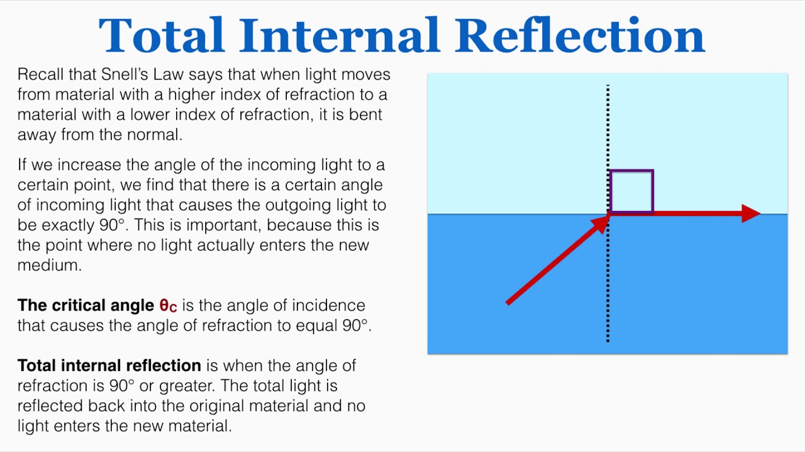

questions
- what do the different polarizations mean
- what do s and p waves represent
good resources
lectures
1: introduction
- basic spectroscopy: light source -> sample -> prism -> detector
- act of separating light
- history of spectroscopy:
- 1666 Newton: continuous spectrum of sun
- 1814 Fraunhofer: found sharp dark lines in sunlight (discrete -> indicts QM)
- 1900: development of QM
- interstellar molecules (unstable)
- our universe:
- molecular clouds:
- very cold: 10 - 100 K
- not dense: $$\frac{10^{3}}{cm^3}$$
- this means not many collisions happening, so very unstable molecules can exist <- spectroscopic observation plays important role
- atmosphere:
- hot: 300 K
- dense: $$\frac{10^{20}}{cm^3}$$
- molecular clouds:
- spectroscopy hydrogen atom: chief experimental basis for theories and structure of matter
- first spectra before QM: Angstrom and Rydberg
- spectra with QM: Bohr
- de Broglie: duality of matter $$\lambda = \frac{h}{p}$$ E = hν
- Schrodinger
- relativistic quantum theory:
- Dirac: combine Schrodinger and Einstein
- $$E = ih \frac{\partial}{\partial \tau}$$
- Einstein: relativity (things moving at speed of light)
- Dirac: combine Schrodinger and Einstein
- splitting of hydrogen: bohr -> dirac -> qed

2: WebMO practice
- dihedral angle: rotate relative to a plane
- linear molecule: 2 rotational constants
- non-linear molecule: 3 rotational constants
- first optimize then calculate vibrational frequency
3: intro to QM
4: intro to EMR
electromagnetic radiation
- electric () and magentic () fields pervade all space; they are vectors with three components (x, y, z)
- in vacuum, speed of light is 2.998 × 108 m/s
- general form: E(r,t) = E0cps(wt−k dotr)
- where E0 is the amplitude vector, k is propagation vector, with r being vector containing x, y, z
- planck relation: $$E = hv = \hbarw = \frac{hc}{\lambda}$$
- 1 eV  = 1.602 × 10−19 J  = 8065.54 cm −1
fields (EMR fields)
- 6 fields that are related by these two equations: $$ \vv{D} = \epsilon \vv{E} = \epsilon_0 \vv{E} + \vv{P}$$ $$ \vv{B} = \epsilon \vv{E} = \mu_0 \vv{H} + \vv{M}$$
- $$\vv{E}$$ and $$\vv{H}$$ (electric and magnetic field) are perpendicular to each other and the propagation vector $$\vv{k}$$
- $$H_0 = \sqrt{\frac{\epsilon}{\mu}}E_0$$
polarization of light
- light is transverse wave: osciallations of $$\vv{E}$$ and $$\vv{H}$$ are perpendicular to propagation direction
- $$ k = |\vv{k}| = \frac{2 \pi}{\lambda} = \frac{w}{c}$$
- still have DOF in plane perpendicular to $$\vv{k}$$, which relates to the polarization of light
- unpolarized light: no perferred direction for $$\vv{E}$$, can be any direction perpendicular, is a statistically mixed state
- polarized light: the polarization of $$\vv{E}$$ can rotate during oscillation, the angle
- for light in the z direction: (Ex0cos(kz−wt),Ey0cos(kz−wt+θ),0)
- plane/linearly polarised: θ= 0
- elliptically polarized light: $$\theta = +/- \frac{\pi}{2}$$, and Ex0 ≠ Ey0 left/right hand
- circularly polarized light: Ex0 = Ey0, L/R
- for light in the z direction: (Ex0cos(kz−wt),Ey0cos(kz−wt+θ),0)
- light is transverse wave: osciallations of $$\vv{E}$$ and $$\vv{H}$$ are perpendicular to propagation direction
angular momentum and light
L/R circularly polarized photons have angular momentum  + / − ℏ
- no Sz = 0 photons as light must remain transverse (what does this mean)
- photon is a massless particle, don’t actually haves spin
- have helicity: value of projection of spin operator onto the momentum operator
- photon is a massless particle, don’t actually haves spin
- unpolarized light: random statistical mixture of L/R
- polarised light: coherent superposition of L/R circularly polarized light
- no Sz = 0 photons as light must remain transverse (what does this mean)
propagation of light
- speed of light in vacuo: $$c_0 = \frac{1}{\sqrt{\epsilon_0 \mu_0}}$$
- speed of light in medium: $$c_0 = \frac{1}{\sqrt{\epsilon \mu}}$$ where ϵ and μ are characteristic to the medium
- refractive index: $$n = \frac{c_0}{v} = \sqrt{\frac{\epsilon \mu}{\epsilon_0 \mu_0}} \geq 1$$, where μ is magnetic permittivity
- for nonmagnetic media: $$n = \sqrt{\frac{\epsilon}{\epsilon_0}} = \sqrt{\epsilon_r}$$, where ϵr is the relative electric permittivity
- dielectric constant: measured by response to static/low frequency electric field
reflection and refraction
- frequency (energy) is unchanged from vacuum value when passing through a medium, v = v0, so since c = c0/n: the wavelength is reduced: $ λ = λ0 / n−E = hv = $$
- reflection (specular, meaning mirror like): θinc =θrefl
- refraction (snells law): n1sinθinc = n2sinθrefr
- polarization:
- determines the reflectivity
- R is reflectance, T = 1 − R is the transmittance
- for s and p waves: with T = 1 − R
- Fresnel equation
- $$R_s = |\frac{n_1 cos \theta_i - n_2 cos \theta_t}{n_1 cos \theta_i + n_2 cos \theta_t}|^2$$
- $$R_t = |\frac{n_1 cos \theta_t - n_2 cos \theta_i}{n_1 cos \theta_t + n_2 cos \theta_i}|^2$$
- normal incidence: θi =θt = 0, then $$R = R_s = R_t = (\frac{n_1 - n_2}{n_1 + n_2})^2$$
- total internal reflection: when n1 > n2, there is a critical angle, which Rs, Rt = 1 
- brewster’s angle: when θt +θi = 90deg $Rp  → 0andTp  → 1$$, p polarized light will not be reflected, or if the incident light is unpolarized, only $s$ polarized light will reflect, this is how you can produce polarized light - $$θB = arctan(n2/n1)$$
- dispersion
- sellmeier equation
radiation density and intensity of light
- let ρ be volume densitty of energy in EM radiation J/m3
- to find contributions at various frequencies ρ(v) is energy density per unit frequency, and $$ ρ = ∫0^inf  p(v) dv$
- intensity of light: I = ∫0infI(v)dv
- photon flux: number of photons flowing through a unit area per unit time $$F = \frac{I}{(hv)}$$
- relations: I(v) = p(v)c = p(v)(c0/n)
- $$I(v) = \frac{1}{2} \epsilon_0 E^2_0 c$$, where E0 is the amplitude for electric field osciallations at frequency v
5: light-matter interaction
- radiation density
6: prep for final presentation
7: intro to molecular rotation and vibration
8: molecular symmetry and group theory 1
- operators:
- Ê is identity operator
9: molecular symmetry and group theory 2
- group theory and quantum mechanics
- point symmetry operator R
- representation of R based on point in 3D space: real orthogonal 3 × 3 rep M = Γ(R)
- symmetry operations as operators on space of wavefunctions
- generalization of symmetry on arbitrary point: $$r = M r = \begin{bmatrix} x^, \\ y^, \\ z^, \end{bmatrix}$$
- we can define the operator P̂R by
- P̂R|ψ⟩=P̂R|ψ(x,y,z)⟩ = |ψ(M−1r)⟩=|ψ(x,,y,,z,,)⟩
- interested in finite dimensional subspace of Hilbert space (5D space spanned by 3d orbitals): basis set is set of solutions of Schrodinger equation, eigenfunctions of Ĥ
- point symmetry operator R
- symmetrization
- projection operator $$\hat{P^{\mu}}$$: annihilates all functions that does not belong to μ-th irreducible representation